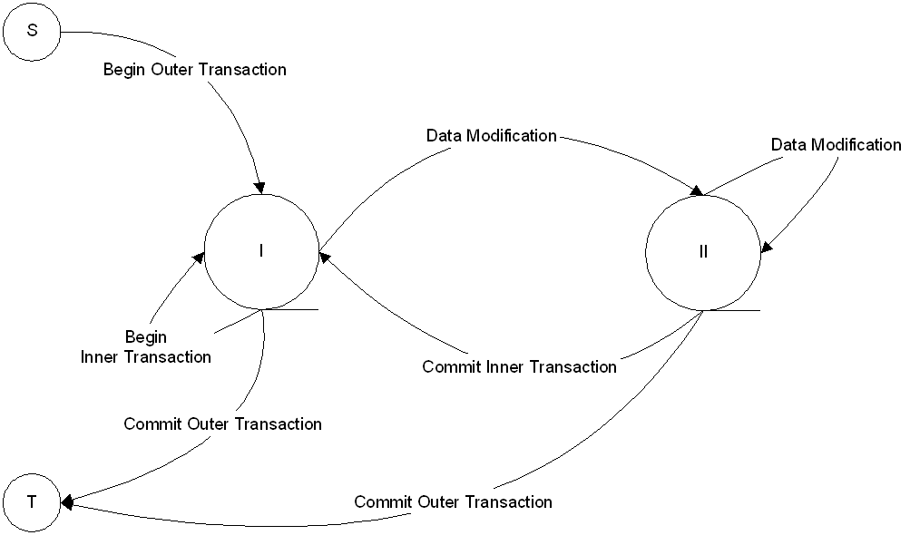

In order to make modifications to a model, session transactions must be used. Prior to making a modification, either BeginTransaction() or BeginNamedTransaction() must be called. Once all the modifications are completed, CommitTransaction() must be called.
Nested transactions and rollbacks are supported with certain limitations. The limitation is illustrated in the following state diagram:

After the beginning of an outer transaction, the API is in State I of the diagram. A new nested transaction can be opened or the outer transaction can be closed. Any operation other than the open or close of a transaction, such as creating, modifying objects, properties, and so on, will transfer the API to State II. In that state further modifications can continue, but no new nested transactions are allowed. The API continues to be in that state until the current transaction is committed or rolled back.
Use of nested transactions allows better control over modification flow. The following examples describe the uses:
Carries out enlisted modifications immediately. Therefore, without closing the outer transaction, the small nested transactions can reflect separate steps of the complex changes with the results of the committed transaction instantly available for the consumption by the next step.
Cancels out the results of all nested transactions. This includes transactions that were committed before the outer transaction rollback.